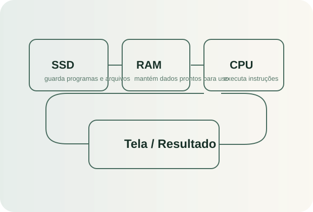
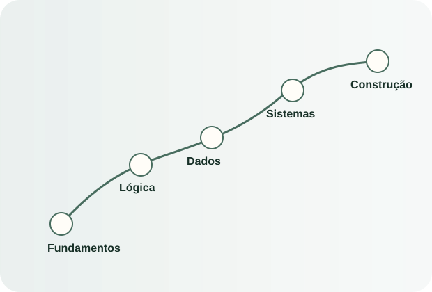
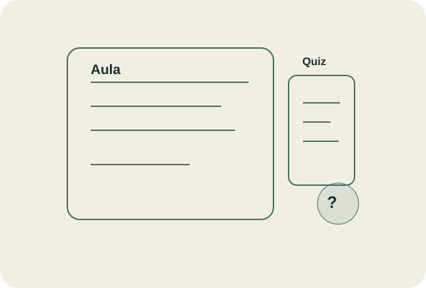
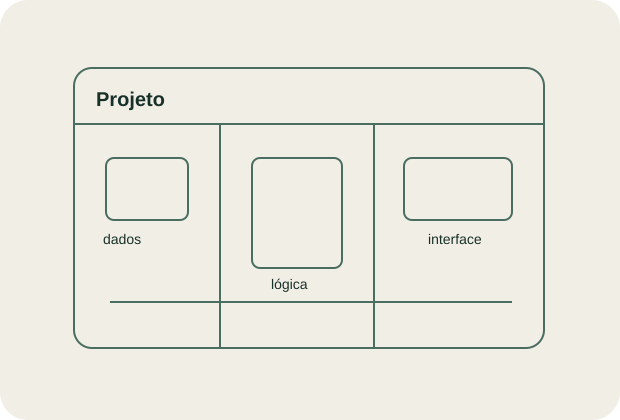
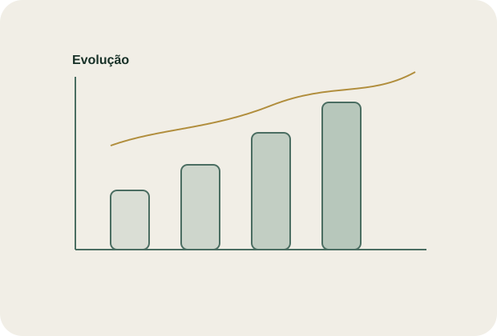
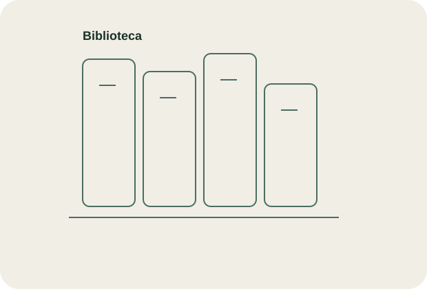
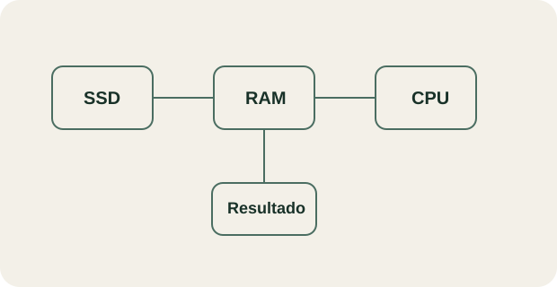

AGORA
Módulo 0
Como a tecnologia realmente funciona
Antes de aprender ferramentas, você vai entender os princípios que tornam as ferramentas possíveis.

Antes de aprender ferramentas, você vai entender os princípios que tornam as ferramentas possíveis.
CPU, memória, armazenamento e sistema operacional.
O caminho de um programa do SSD até a tela.
Exercício de raciocínio sem código.
Teste rápido + explicação com suas palavras.

O caminho foi desenhado para criar compreensão antes de especialização.
Computador, informação, programas, algoritmos, dados, internet e sistemas.
Variáveis, decisões, repetições, funções e estrutura mental de programação.
Modelagem, SQL, qualidade de dados, relacionamentos e consultas.
Cliente, servidor, APIs, requisitos, front-end, back-end e arquitetura básica.
Dados, BI, sistemas, software, automação, cloud, IA e segurança.

Cada aula combina contexto, princípio, visualização, aplicação e teste.

A teoria sempre termina em algo que funciona.
Cadastro, validação, banco, filtros, dashboard, automações e publicação — construído aos poucos conforme você aprende cada fundamento.

Seu avanço é baseado em evidência de compreensão e aplicação.

Conceitos, glossário, mapas mentais e materiais úteis ficam aqui — sem virar depósito de links.

Da necessidade humana de calcular ao caminho que um programa percorre entre armazenamento, memória e processador.
Porque armazenar informação e executar instruções são problemas diferentes. Um computador moderno separa essas responsabilidades para ganhar velocidade, flexibilidade e controle.
Se o SSD já guarda os programas, por que o computador não executa tudo diretamente dele?